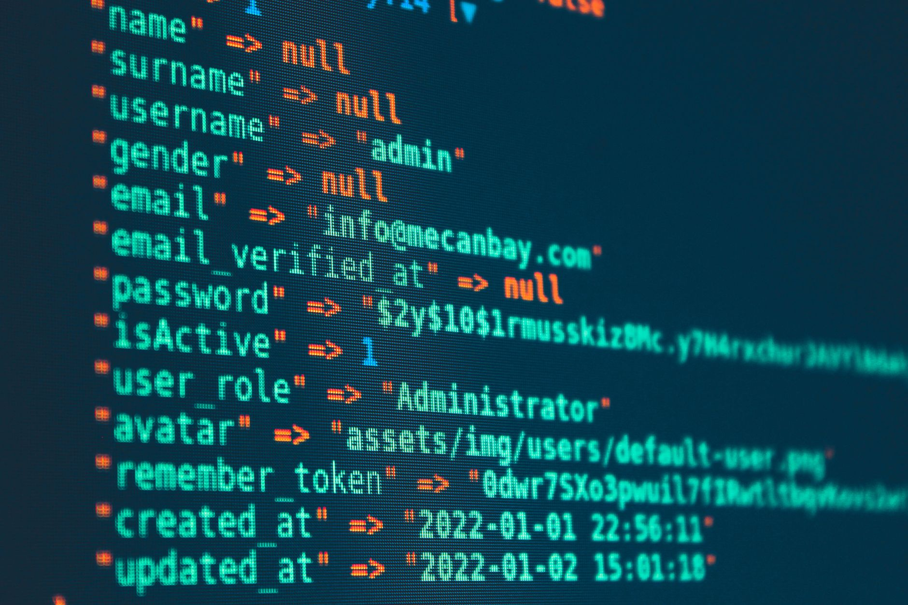

Understanding the foundation of the web
To understand the current panic, we first need to define what PHP actually is. PHP, which originally stood for Personal Home Page, is a widely used open-source scripting language specifically designed for web development. It serves as the engine under the hood of millions of websites, handling everything from processing user data in forms to interacting with complex databases.
Think of a website like a basketball game. While the visual elements—the court, the players, and the jerseys—are what you see, PHP is like the rules of the game and the officiating. It works behind the scenes to ensure that when a player makes a move, the score is updated correctly and the game flows smoothly. Without these backend instructions, the internet would be a collection of static pages rather than the interactive experience we know today.
PHP powers a massive portion of the internet, including the world's most popular content management systems like WordPress. Because so much of our digital life relies on this single language, any vulnerability discovered within its framework doesn't just affect one site; it threatens the stability of the entire web ecosystem.
The spark behind the international alert
The recent cybersecurity alert was triggered by the discovery of critical vulnerabilities that could allow hackers to take control of web servers. Unlike a targeted attack on a single company, these flaws are systemic. When a flaw is found in a language as ubiquitous as PHP, it creates a race against time between security researchers and malicious actors.
The scale of the dependency on PHP means that a single unpatched vulnerability can create a domino effect across global digital infrastructure.
Cybersecurity experts have noted that the primary concern is the ease with which automated bots can scan the internet for unpatched servers. Once a vulnerability is public knowledge, hackers use scripts to find every single instance of that specific PHP version, attempting to exploit them before administrators have a chance to apply security updates.
How these vulnerabilities work
Most PHP-related security threats fall into a few specific categories that developers must constantly guard against. These flaws typically exploit how the server handles data or how it communicates with other parts of the system.
When these vulnerabilities are combined, they can lead to massive data breaches. For a website owner, a successful exploit could mean the loss of customer credit card information, personal identities, or even the total shutdown of their online business operations.
Why the world is so concerned
The reason this has moved from a technical niche to a headline news item is the concept of 'single point of failure.' In cybersecurity, if a huge percentage of the world relies on one tool, that tool becomes a massive target. If PHP fails or is compromised, the economic impact would be felt globally, affecting everything from e-commerce to government services.
Furthermore, many small businesses and individuals use 'set it and forget it' software. While large corporations like Google or Facebook have massive teams dedicated to patching their systems, millions of smaller websites run on outdated versions of PHP that haven't been updated in years. These neglected sites act as easy entry points for larger network attacks.
This creates a landscape of 'low-hanging fruit' for cybercriminals. They don't need to be geniuses to break into these systems; they just need to use automated tools to find the weakest links in the massive chain of global web servers.
Steps to stay protected
While the news sounds dire, there are concrete steps that developers and website owners can take to mitigate these risks. Cybersecurity is an ongoing process of maintenance rather than a one-time setup.
For the average user, the best defense is to use reputable services and ensure that any website where you enter sensitive information is using modern, encrypted protocols. Being aware of the digital landscape is the first step toward personal security.
A world of shifting digital security
The PHP alert is a reminder that our digital world is interconnected and often fragile. As technology evolves, so do the methods used to exploit it. We see this complexity not just in code, but in the way international relations and digital politics intersect, often impacting individuals in unpredictable ways.
For example, the intersection of technology and global politics can lead to complex human stories, such as the recent news regarding how US Citizen Stephen Hubbard Freed by Russia, which highlights how geopolitical tensions can impact individuals across borders. Just as code requires constant monitoring to stay secure, global stability requires constant vigilance.
As we move forward, staying informed about both technical vulnerabilities like PHP and broader global events will help us navigate an increasingly complex and digital-centric world.
See Also
If you enjoyed this Current Events article, check out US Citizen Stephen Hubbard Freed by Russia for more useful reading.